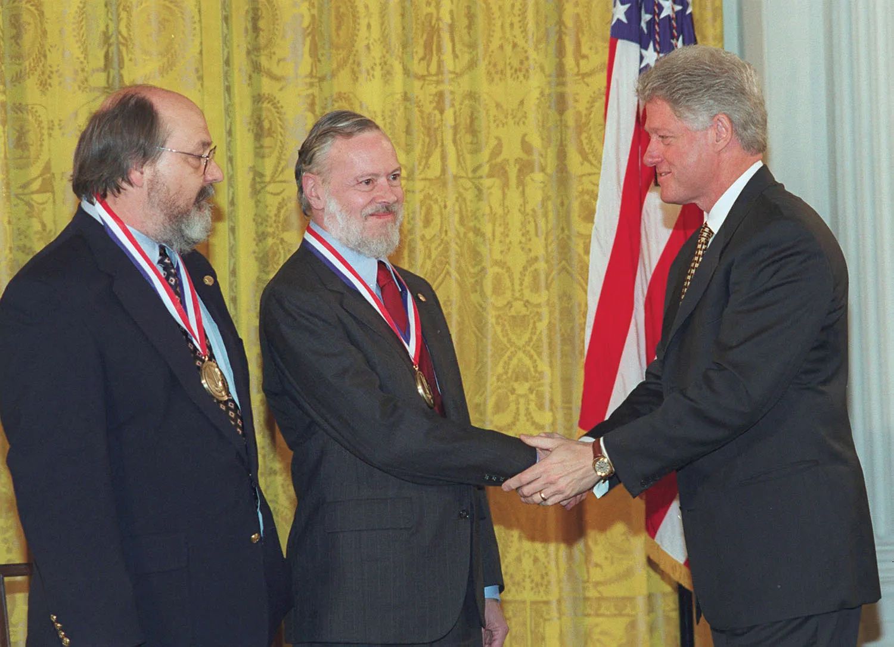
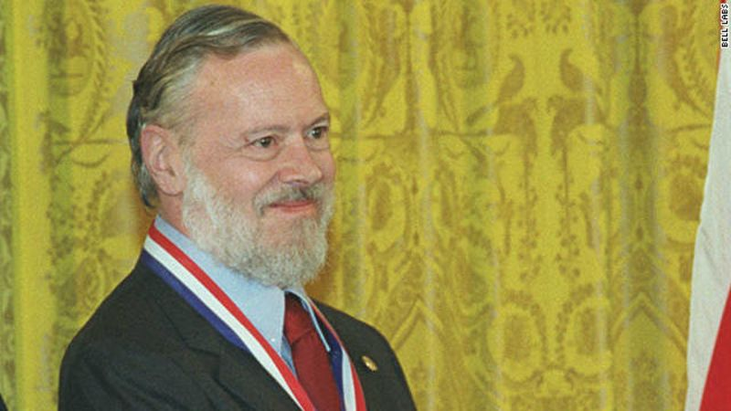

Citations
- “Dennis Ritchie.” Wikipedia, Wikimedia Foundation, 30 Nov. 2019,
---. en.wikipedia.org/wiki/Dennis_Ritchie.
- “Dennis Ritchie Home Page.”
Www.bell-Labs.com, www.bell-labs.com/usr/dmr/www/.
- “Britannica.” Encyclopædia Britannica, 2024,
www.britannica.com/biography/Dennis-M-Ritchie/. Accessed 2 Oct. 2024.
- Wikipedia Contributors. “C (Programming Language).” Wikipedia, Wikimedia Foundation, 25 Sept. 2019,
en.wikipedia.org/wiki/C_(programming_language).
- Wikipedia Contributors. “B (Programming Language).” Wikipedia, Wikimedia Foundation, 11 Aug. 2019,
en.wikipedia.org/wiki/B_(programming_language).
- “Ken Thompson.” Wikipedia, 24 Aug. 2020,
en.wikipedia.org/wiki/Ken_Thompson.
- “Kenneth Lane Thompson | American Computer Scientist.” Encyclopedia Britannica,
www.britannica.com/biography/Kenneth-Lane-Thompson.
Images


Dennis Ritchie and Ken Thompson at Bell labs, 1973


Dennis Ritchie and Ken Thompson winning the Japan prize in 2011
Videos
Go back to Title Page here